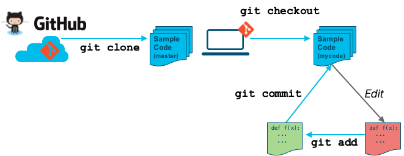

DevNet sample Git workflow

- Clone the remote repository.
git clone <repo>
- Create and checkout a local branch on your workstation.
git checkout –b new-branch-name
- Make your changes and perform incremental commits as you go.
git add filename
git commit -m "Commit message"